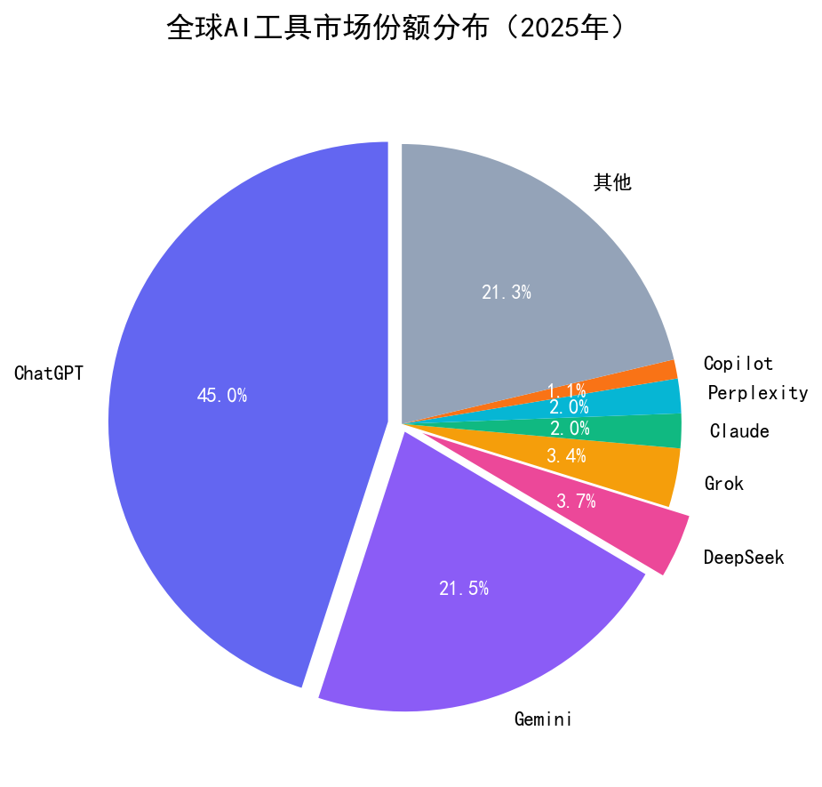

国产大模型崛起，成本优势+中文优化，增速惊人
DeepSeek 虽然全球市占率3.7%，但在中文市场增速最快。以下是2025年全球AI工具市场份额分布：

💡 关键洞察： ChatGPT 以45%占据半壁江山，但 DeepSeek 仅用一年时间就将市占率从几乎为零提升到3.7%，增长速度是所有竞品中最快的。Gemini 以21.5%稳居第二。
幻方量化旗下大模型公司成立，背靠量化交易的算力和数据优势。
以极低的API价格引发行业震动，被称为"AI界的拼多多"。
性能接近GPT-4，但训练成本仅557万美元，引发全球AI圈热议。
在全球AI工具市场占据3.7%份额，成为增长最快的新势力。
大量第三方应用集成DeepSeek API，从写作到编程到客服，生态快速扩张。
1. 极致性价比：API调用成本只有OpenAI的1/10甚至更低，开发者用完都说"真香"。
2. 中文优化：在中文理解、古文翻译、诗词创作等方面表现优于GPT-4，国内用户感受明显。
3. 开源策略：模型权重开源，允许商用，吸引大量开发者基于DeepSeek做二次开发。
4. 推理能力：在数学、逻辑推理、代码生成等任务上表现出色，被教育行业大量采用。
1. 做DeepSeek应用：基于DeepSeek API开发垂直应用（如法律文书生成、医学报告分析、教案设计），成本低，利润高。
2. 本地化部署服务：帮企业私有化部署DeepSeek，数据不出内网，客单价高（几十万到上百万）。
3. 教育培训：教中小企业怎么用DeepSeek提效，做Prompt工程培训、Agent设计培训。
4. 内容创作：用DeepSeek批量生成SEO内容、社交媒体文案、电商商品描述，成本低到可以忽略不计。